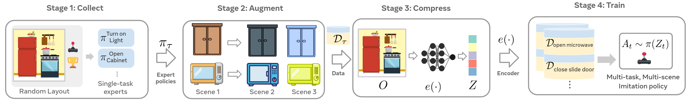
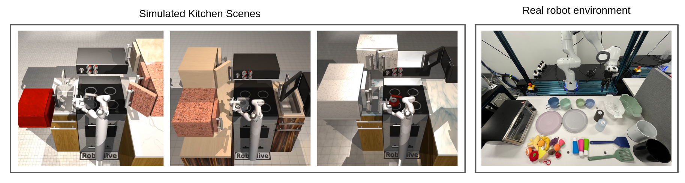

CACTI: A Framework for Scalable Multi-Task Multi-Scene Visual Imitation Learning
Zhao Mandi*, Homanga Bharadhwaj*, Vincent Moens, Shuran Song, Aravind Rajeswaran, Vikash Kumar
We introduce CACTI: a framework for better scaling up robot learning under the lens of multi-task, multi-scene robot manipulation in kitchen environments. We experiment with twenty tasks across more than two thousand layout variations, and a real robot environment with tasks involving everyday kitchen objects.
Environment and Task

Visualizing random scene variations in the simulated kitchen environment (on the left and center images) and the set of all objects in the real robot environment. Both the simulation and the real environment have a Franka Emika Panda arm, operated through joint position controller.
Acknowledgements
Contact
.